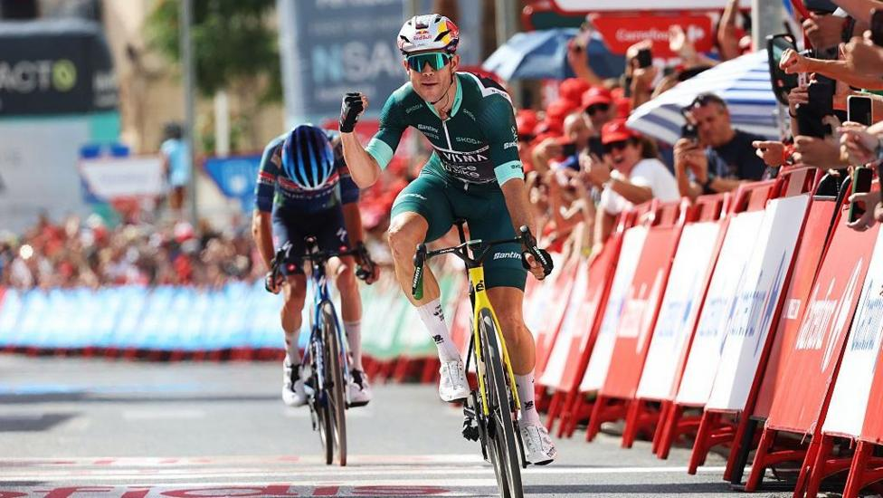
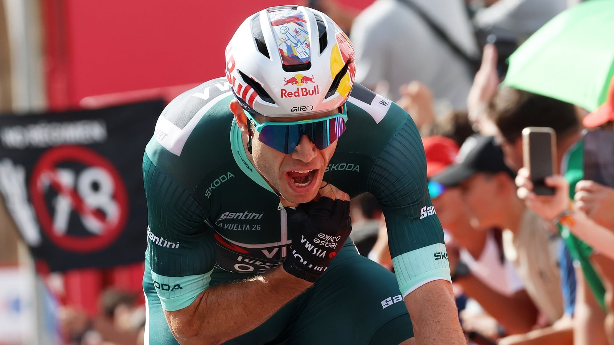
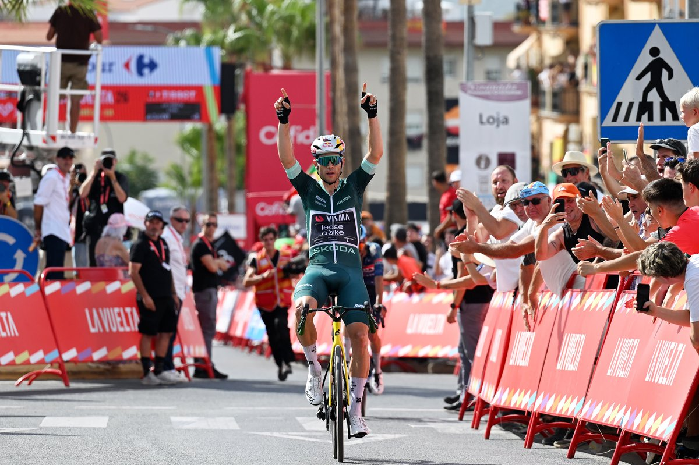

Green finally converts
5 Sep 2026
Stage 13, Fri 4 Sep: Almuñécar → Loja, 192.8 km. Van Aert 4:34:00. Paret-Peintre same time. Brennan +0:24. Fourth Visma stage of the race.
Saturday 5 Sep 2026
Stage 13, Fri 4 Sep: Almuñécar → Loja, 192.8 km, hilly southern Spain in scorcher heat. Winner Wout van Aert (Visma–Lease a Bike) 4:34:00. 2. Valentin Paret-Peintre s.t. 3. Matthew Brennan +0:24. 4. Jarno Widar +0:24. 5. Vincenzo Albanese +0:24.
Red Mas 45:08:51. Roglič +1:45. Gall +2:06. Carapaz +3:53. Onley +4:29 (white). Omrzel +4:59 (+0:30 white). Green van Aert 224. Polka Buitrago 58. Team Decathlon CMA CGM. DNF: Mühlberger (crash, early), Busatto, Sentjens, Sivakov. DNS: Lutsenko. Tomorrow Stage 14, Sat 5 Sep: Jaén → Sierra de la Pandera, 154.5 km summit finish.
Fourth day in the break this Vuelta, three prior top-fives, and the green jersey finally cashed. A 43-rider circus survived the heat, Visma played the numbers with Brennan softening the remnants, then van Aert and Paret-Peintre went clear with about 3.7 km left. Two-up sprint in Loja — Belgian power, no drama.
GC napped three minutes back. Mas kept the +1:45 cushion on Roglič and the top eight stayed put, but Decathlon lost Mühlberger early to a crash — a helper punch for Gall before the mountains bite again. Week three opens on Pandera. Red still has to spend.

5 Sep 2026
Stage 13, Fri 4 Sep: Almuñécar → Loja, 192.8 km. Van Aert 4:34:00. Paret-Peintre same time. Brennan +0:24. Fourth Visma stage of the race.

5 Sep 2026
Brennan softened the late selection, then the Belgian went with Paret-Peintre inside 4 km. Two-up sprint, no contest. Green now 224 points.

5 Sep 2026
Mas, Roglič, Gall, Carapaz all +3:00 on the winner. Red still +1:45. White Onley, polka Buitrago. Today: Jaén → Sierra de la Pandera, 154.5 km.